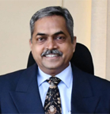
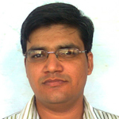

Executive Committee

Prof. Sudhirkumar Barai

Prof. Satyendra Kumar Sharma
Objectives
1. To support and incubate 50 ideas in 3 years, and 100 ideas in 5 years in social impact and sustainability sectors.
2. To actively support ideas in social impact and sustainability sectors through:
a. Mentoring
b. Training & Educational programmes
c. Incubation support services
3. 3. To bridge the knowledge gap through training and educational programmes in :
a. social entrepreneurship
b. sustainable business
c. Corporate Social Responsibility
d. Non-profit management
4. To identify emerging startups creating impact through Impact Start-up Pitching Events.
5. To bring in relevant experts and enthusiasts and organize innovation challenges and hackathons for specific problems in this domain.
6. To create funds: to provide as grants and co-invest with impact investors to promote impact start-ups and non-profits
Areas of Focus
To achieve the aim and objectives, the Centre for Social & Sustainable Entrepreneurship focuses on three types of organisations to create impact in social and sustainable sectors.
1. Non-profit organisations play a key role in social and sustainable sectors. The Centre proposes to provide mentorship support, connect to funders (grants/donations), need-based networking, and provide incubation facilities for one year.
2. Social Enterprises or Hybrid Organisations follow market- and semi-based approaches to problem solving in social and sustainable sectors. Revenue generation, innovation, and improving low-income communities or environmental outcomes is central to social enterprises. All the services ranging from ideation to incubation are provided to social enterprises.
3. For-Profits in UN SDG sectors operate in areas ranging from poverty alleviation, food security to climate change and green initiatives. Recent emphasis by governments, innovators, and funders on UN SDG sectors provides a great opportunity to support ideas in this space. All the services ranging from ideation to incubation are provided to social enterprises.
Strengths of BITS Pilani & PIEDS
BITS Pilani and PIEDS together have accumulated several skills and expertise to launch and undertake activities of the Centre for Social & Sustainable Entrepreneurship initiative. NSS wing of BITS Pilani, and NIRMAAN have been operating in the space of social sector. Talent pool of students, faculties and alumni networks is a drive successful for the Centre for Social & Sustainable Entrepreneurship. In addition, the PIEDS Team has accumulated expertise on incubation, and the Centre for Social & Sustainable Entrepreneurship takes learnings from PIEDS Team. Last but not the least, the faculties, students and mentors have expertise in social entrepreneurship as well as sustainability. Together, the strengths of BITS Pilani and PIEDS work in favour of the Centre for Social & Sustainable Entrepreneurship.
Governance Structure
The Centre for Social & Sustainable Entrepreneurship (CSSE) works under Pilani Innovation & Entrepreneurship Development Society (PIEDS), Birla Institute of Technology and Science, Pilani. An Advisory Committee of five members, an Executive Committee of seven members, and the Students Team shall steer the activities of the Centre for Social Entrepreneurship.
Executive Committee
Prof. Satyendra Kumar Sharma